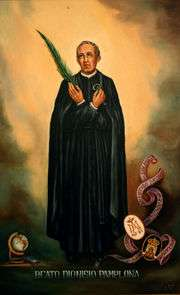

Introducción
Nació en 1858 en Calamocha (Teruel). Ejerció su ministerio como maestro y educador en los colegios escolapios de Alcañiz, Jaca, Pamplona y Barbastro. En Buenos Aires fue, también, rector del colegio y párroco, y ambos oficios desempeñaba en Peralta de la Sal, cuando fue apresado y encarcelado.
Datos Biográficos
A continuación, algunos datos clave sobre la vida de este gran santo.
| Dato | Descripción |
|---|---|
| Nombre completo | Dionisio Pamplona Polo. |
| Nacimiento | 11 de octubre de 1868 Calamocha, Teruel, España. |
| Fallecimiento | 25 de julio de 1936 (67 años) Monzón, Provincia de Huesca, España. |
| Beatificación | 1 de octubre de 1995 por Juan Pablo II |
| Canonización | 17 de noviembre de 1889 ante el padre Vidaller, delegado por el vicario general Manuel Pérez.. |
| Fiesta litúrgica | 25 de julio. |
Virtudes y Aportes Espirituales
San Dionisio Pamplona es reconocido por las virtudes que marcaron su vida:
- Fidelidad: Defendió su fe y su ministerio incluso ante la muerte.
- Entrega educativa: : Dedicado con amor a la formación de los jóvenes.
- Valentía: Enfrentó el martirio con serenidad y fe, gritando «¡Viva Cristo Rey!».
Imágenes
San Pamplona, un ejemplo de servicio a los demás.